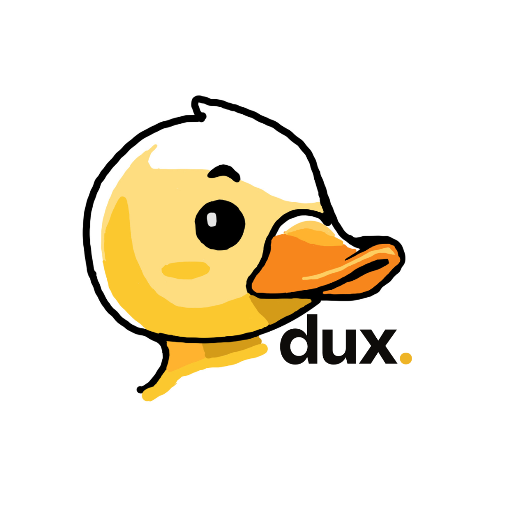

dux.
[currently building]
MRI analysis model that predicts FSHD disease progression for optimal therapeutic insertion.
Mainly focused on the intersection of technology and healthcare/sustainability.
[currently building]
MRI analysis model that predicts FSHD disease progression for optimal therapeutic insertion.
Self-sufficient water filter to democratize access to clean water in Lima's suburbs.
Long-duration energy storage facility that stores energy as heat instead of electricity.

An app that recommends food places based on vibes.
Quantum computing optimization algorithms with PyZX research.

[currently building]
The recognitions closest to my heart.
Won pitching competition organized by Stanford ASES judged by renowned Silicon Valley VCs. Funded to develop MVP.
Given by Schmidt Futures and the Rhodes Trust to 100 students around the world to cover full undergraduate studies.
Won pitching competition in ari global's climate tech research sprint with SaveHeat, judged by renowned San Francisco entrepreneurs.
2nd place at one of the most prestigious regional interscholar mathematics tournament.
National prize for best solidarity-driven projects amongst 18-35 year olds.
Chosen as the head of Villa Caritas' school council, representing +2000 young girls in school administrative settings.
Led weekly meetings @ UWC Adriatic and negotiated sustainable policies with school administration.
National: 5x Best Delegate, 4x Best Large Delegation.
International: 1x Best Delegate @ NHSMUN 2021.
Started first engineering club in Villa Caritas School (Lima, Peru). Taught basics of robotics and Python, inspiring over 200 girls to pursue their passion for engineering.
Finalist in Green Textiles Challenge, proposing a sustainable production mechanism for textiles.
2nd place at national musical audition competition, being able to recognize diverse classical music compositions in less than 0.5 seconds.
Feel free to say hi at mafer@stanford.edu!